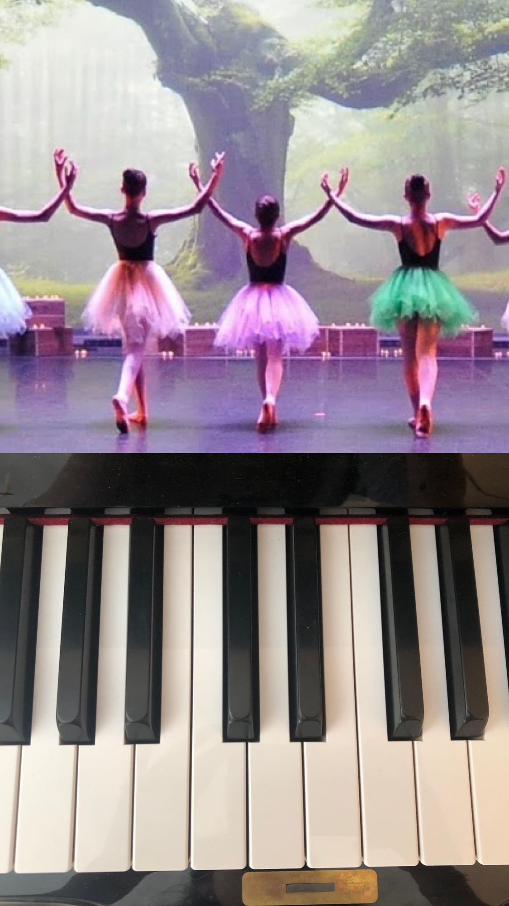

A Propos de moi
Entre la théorie de mes études et la réalité du terrain en entreprise, j'ai développé un goût prononcé pour les défis concrets. Pour moi, la science des données prend tout son sens lorsqu'elle se met au service de l'humain. C'est pourquoi je souhaite canaliser mon expérience pour relever les défis du secteur médical, en transformant des données complexes en solutions de diagnostic précises, claires et accessibles.
Mon parcours
Après avoir tenté le concours de médecine, j'ai choisi de rebondir et de me tourner vers le monde de la donnée. Ce changement de cap m'a permis de réaliser une chose essentielle : je pouvais lier mon rêve initial à un secteur en pleine expansion. Aujourd'hui, je ne pratique pas la médecine, mais je mets la data au service de la santé pour créer les outils de diagnostic de demain.
Mon alternance
Depuis septembre 2025, j'effectue une alternance sur 2 ans chez Simafex. Simafex est un site pharmaceutique industrielle produisant des produits de contraste. J'occupe le poste de Technicienne Data Analyste au sein du service Excellence opérationnel. L'objecitf de ma mission est de réaliser une cartographie des flux data du site afin de les optimiser.

Centres interet
Ma vie trouve son équilibre entre deux univers artistiques : la musique et la danse. Le piano, ma passion de longue date, est un instant de concentration profonde, de créativité et de structure. Parallèlement, la danse me permet d'explorer le mouvement, d'exprimer mes émotions et de repousser mes limites. Chaque art nourrit l’autre : la rigueur de la musique inspire mes gestes, tandis que la fluidité de la danse nuance mon jeu de pianiste. Cet épanouissement créatif m'apporte la rigueur et l'agilité indispensables à mon quotidien